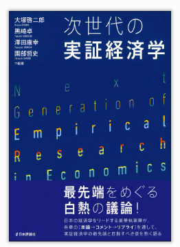
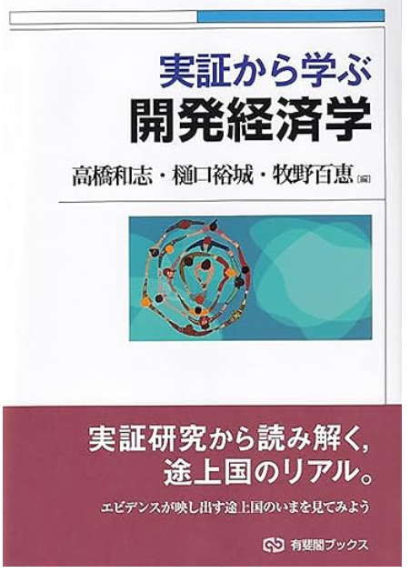

研究・教育の紹介
開発経済学・政治経済学を専門とし、制度と経済発展の関係、 テキストデータを用いた実証分析などに取り組んでいます。
著書（分担執筆）

実証から学ぶ 開発経済学
途上国の経済発展を実証研究の視点から解き明かす入門書。 貧困、教育、健康、農業、金融など開発経済学の主要テーマについて、 最新のエビデンスに基づきながらわかりやすく解説しています。 ランダム化比較試験（RCT）や自然実験など、現代の開発経済学で用いられる 分析手法も丁寧に紹介されており、実証研究の面白さを体感できる一冊です。
第10章「制度と経済発展」
なぜ国によって経済発展の程度が異なるのか？この問いに対し、
法制度、所有権、民主主義といった「制度」の役割に着目して解説しています。
植民地時代の歴史が現代の経済パフォーマンスに与える影響など、
興味深い実証研究を紹介しながら、制度と発展の因果関係を考察します。

次世代の実証経済学
日本の経済学をリードする研究者たちが、実証経済学の最先端と今後の方向性を 「本論・コメント・リプライ」形式で熱く議論する一冊。 因果推論の発展、ビッグデータの活用、機械学習との融合など、 実証経済学が直面する新たな挑戦と可能性について、 多角的な視点から検討しています。
第2章（園部哲史・黒崎卓）へのコメント
開発経済学における実証研究の方法論と今後の展望について、
コメンテーターとして議論に参加しています。
フィールド実験の意義と限界、外的妥当性の問題、
政策への示唆など、実証研究の実践的な課題を掘り下げています。